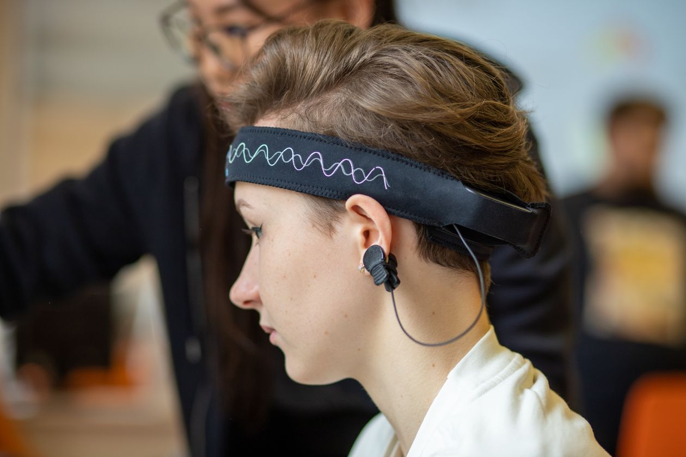
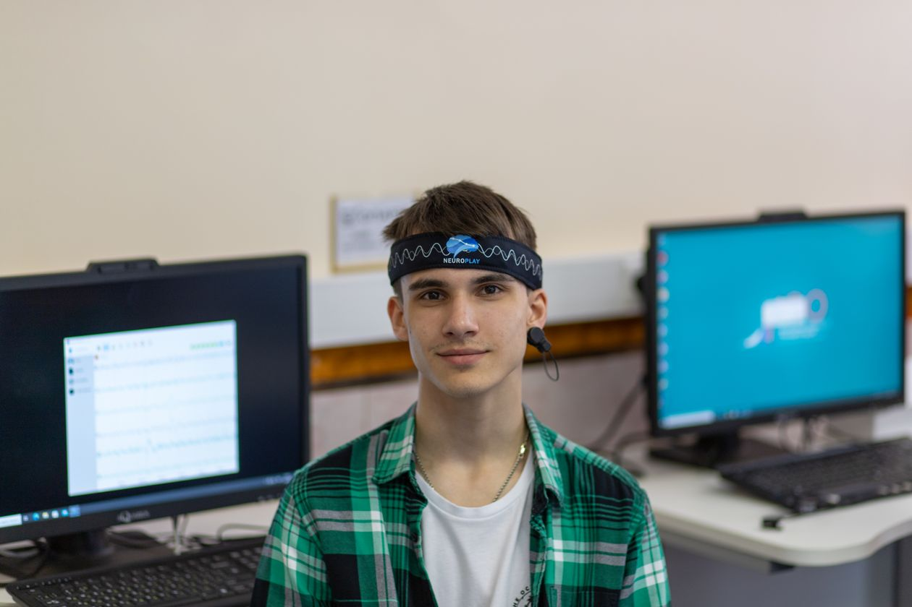

Three engagements, each told as brief → decisions → outcome. One of them is a success the client nearly published by mistake; one is a speller whose numbers are printed with their limits attached; one is a pipeline that failed silently until it couldn't.
A research group was weeks from submitting a paper built on a frontal theta difference between two task conditions. Before submission, their PI commissioned an independent audit of the dataset — the cheapest insurance in science, and the kind most groups skip.
The decisions
The audit re-ran the pipeline from the raw files, this time with the eye channel (EOG) carried through instead of discarded. The “effect” tracked the difference in blink rate between conditions almost exactly: one condition simply made people blink less. With blink-contaminated epochs rejected under rules written down in advance, the frontal difference was gone.
The outcome
The finding was delivered in a written report before submission — not after review, not after publication. The group withdrew the draft, re-recorded with a dedicated EOG channel and pre-registered rejection rules, and the re-run study is the one now in preparation. The audit cost a fixed fee; a retraction would have cost considerably more.
OutcomeSubmission stopped in time; dataset re-recorded under a written protocol. The testimonial on the Index sheet belongs to this file.
A speller that says only what it means
CASE FILE 02
Client · Assistive-technology teamYear · 2025Data · 16 channels · real-timeEngagement · P300 speller pipelineStatus · Delivered — in the team's own evaluation
The brief
An assistive-technology team needed the signal pipeline for a P300 speller prototype: flash a grid of letters, average the responses, and let the ~300 ms bump mark the attended letter. They needed engineering, and they needed the limits stated as plainly as the results.
The decisions
The pipeline was built offline-first: recorded data, honest cross-validation, no number quoted from the same data that produced it. Six lab users, none of them patients, worked the speller under the team's own protocol. The deliverable included a limits memo — what the prototype is not — alongside the code.
The outcome
Offline character accuracy averaged 84% across the six users, ranging from 71% to 93% — a spread that matters more than the mean. The best user managed roughly four to six characters a minute; the others, fewer. That is a laboratory prototype, not a medical device and not a product claim, and it is printed here at the same size as the accuracy figure.

Reference photograph. A participant wearing a consumer-style EEG headband. Not a user of the speller, and not the team's hardware — research spellers are evaluated on recorded data before anyone depends on them.
OutcomePipeline and limits memo delivered; the team is running its own evaluation. Any future clinical step belongs to the team and its ethics board, not to this practice.
A group's real-time study kept producing small, unexplained timing inconsistencies: stimulus markers that landed a few milliseconds off, differently every session. Nothing crashed. Nothing logged an error. The data just quietly disagreed with itself.
The decisions
The acquisition layer was instrumented before anything was “fixed”: sample counters on every block, gap detection at the driver boundary. The counters showed buffer overruns on the USB link dropping samples in bursts — and because markers were counted in samples, every dropped burst shifted every later trial in the file.
The outcome
The pipeline was rebuilt so gaps are flagged in the record at the moment they happen, with markers anchored to the hardware clock rather than the sample count. A six-hour soak run under load produced zero unflagged gaps. Earlier sessions could be partially repaired from the logs; the group's methods section now reports gap statistics as a matter of routine.

Reference photograph. A participant at a laboratory workstation. Not this practice's laboratory or the client group's sessions — real-time acquisition faults are found in counters and logs, not in photographs.
OutcomeSilent corruption replaced by flagged gaps; the failure mode is now part of the group's standard reporting.